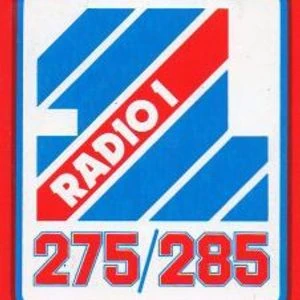

Presented by Tommy Vance · BBC Radio 1 · Archive

| # | Artist | Track | Time |
|---|---|---|---|
| 1 | — tape starts | — | |
| 2 | John Mayall & The Bluesbreakers | Crawling Up a Hill | — |
| 3 | John Mayall & The Bluesbreakers | Crocodile Walk | — |
| 4 | John Mayall & The Bluesbreakers | Bye Bye Bird | — |
| 5 | Saxon | Taking Your Chances | 00:09:00 |
| 6 | Hawkwind | Motor Way City | 00:15:00 |
| 7 | Hibiscus | White Knight | 00:20:38 |
| 8 | Rush | The Trees | 00:27:00 |
| 9 | — Friday Night Connection | 00:32:38 | |
| 10 | Hibiscus | I See the Sun | — |
| 11 | Ozzy Osbourne | Mr. Crowley | 01:02:19 |
| 12 | Thin Lizzy | Emerald | 01:03:00 |
| 13 | Scorpions | He's a Woman - She's a Man | 01:10:39 |
| 14 | John Mayall & The Bluesbreakers | Riding on the L and N | — |
| 15 | John Mayall & The Bluesbreakers | Sitting in the Rain | — |
| 16 | John Mayall & The Bluesbreakers | Leaping Christine | — |
| 17 | Jon Anderson | For You, For Me | 01:29:54 |
| 18 | Eagles | Hotel California | 01:24:00 |
| 19 | Hibiscus | Quilta | — |
| 20 | — tape ends | — | |